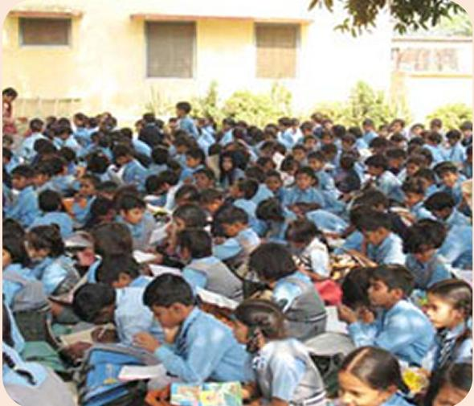
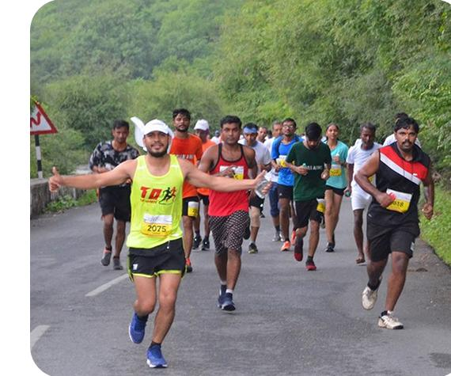
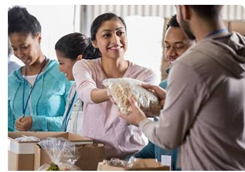
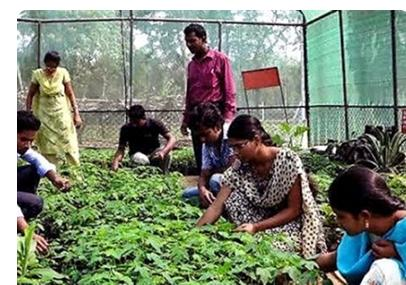
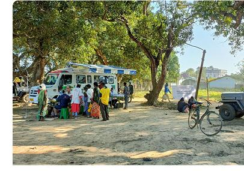
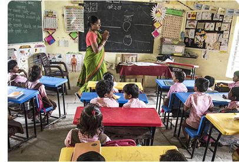
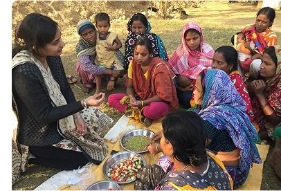
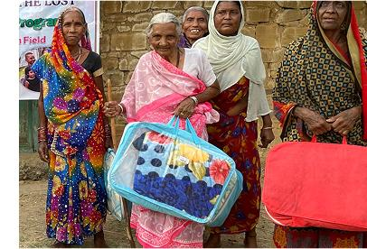

Together, We Can Create a Better Tomorrow
Annai Foundation works with communities to create meaningful change through health, social welfare, livelihood support, and civic empowerment.

Annai Foundation is a registered charity dedicated to structural upliftment, community care, and sustainable social impact across underserved regions of India.

Running Together, Changing Young Lives
The Annai Charity Run & Community Fundraiser is more than just a run — it's a movement of compassion and community.
In our latest event, over 350+ participants came together to support our mission of fighting child malnutrition. Every step taken and every donation made directly contributed to providing nutritious meals and essential school supplies for children in need.
Read the StoriesOur Focus Programs
Annai Foundation drives structured initiatives across critical sectors to build a sustainable, empowered community.

Civic Empowerment & Advocacy
Conducting workshops to educate villagers about government welfare policies, gender equality, and civic responsibilities.

Livelihood Support
Structuring skill workshops, small enterprise loans, and agricultural assistance to build financial independence.

Health & Emergency Services
Providing mobile clinics, diagnostics, medical supplies, and sanitation support in remote villages.

Education
Renovating rural school facilities, setting up libraries, and providing scholarships to meritorious underprivileged children.

Child & Family Welfare
Arranging nutrition camps, hygiene workshops, counseling, and children's welfare groups in slums and villages.

Social Welfare
Securing dry rations, clothing, housing repair, and support networks for widows, seniors, and destitute citizens.